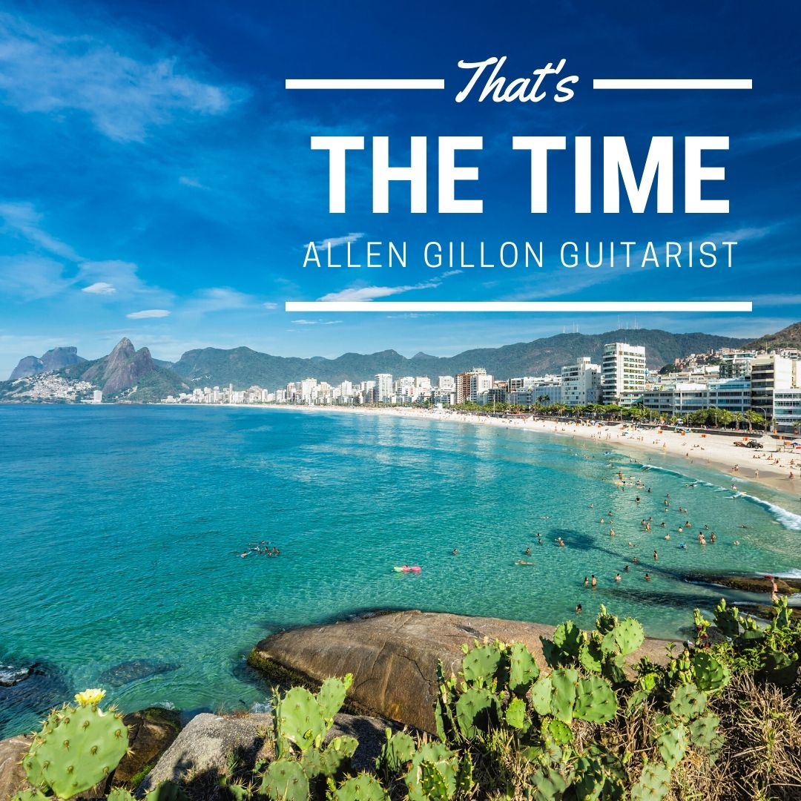

Allen and Ann Gillon are local musicians performing around the Bribie Island area. Here they share the albums they have recorded, free for you to enjoy.
Away from the guitar, Allen is a qualified teacher who has written storybooks for children, five school plays, and classroom textbooks. All of it lives here now, in the one place.
Allen Gillon
Guitarist, songwriter, author and playwright. Sixty years of making things, gathered on one page. The music comes free.
Click on your interest.
-
1

Listen Free Five albums to hear free, the duet Timeless with Ann, and his original songs - 2 Shows Restaurant guitarist, jazz for dining rooms, functions and events
- 3 Children's Books Storybooks written by Allen, read-along recordings on the way
- 4 School Plays Five plays written and performed, plus classroom textbooks
- 5 A Timeless Story Bandleader, Vietnam tours, television in Bangkok, and family